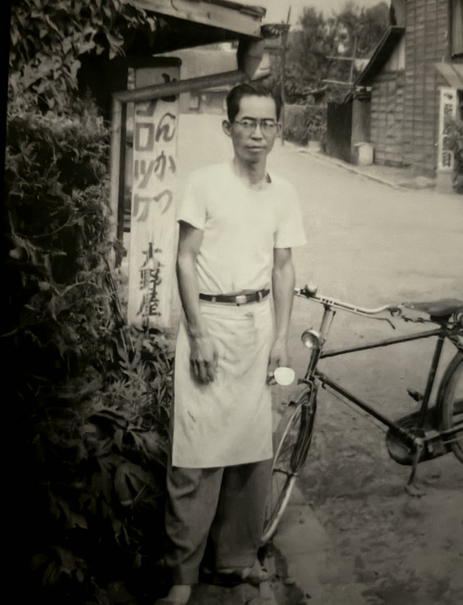

肉の目利き
部位、脂、香り、加工後の食感まで見越して、惣菜に合う肉を選びます。
大野屋について
惣菜店から精肉店へ、そして冷凍惣菜で全国へ。飯能の暮らしに寄り添ってきた歩みを、いまのごちそうに込めます。
昭和27年創業
大野屋のはじまりは、昭和27年5月。 埼玉県飯能市東町に開いた「大野屋惣菜店」でした。 できたての惣菜を届ける小さな店から始まり、 昭和42年には「大野屋精肉店」を開店。 肉を見極める目、素材を活かす技、地域の食卓に寄り添う姿勢を、 一日一日積み重ねてきました。
その歩みは、精肉、仕出し、懐石料理、弁当、宅配、飲食店運営へと広がり、 特別な日のごちそうから毎日の食事まで、 飯能の暮らしのそばで受け継がれてきました。 時代が変わっても変わらないのは、 「食を通じてお客様に喜びや感動を与える」という想いです。
七十余年にわたり磨いてきた目利きと味づくりを、 今度は冷凍惣菜というかたちで全国の食卓へ。 大野屋は、老舗の誇りを込めて、 本当においしい肉のごちそうをお届けします。

部位、脂、香り、加工後の食感まで見越して、惣菜に合う肉を選びます。
火入れや味付けを急がず、家庭で温めたときにおいしくなる状態を目指します。
旨みと食感を保つ冷凍管理で、離れた場所にも安心して届けます。